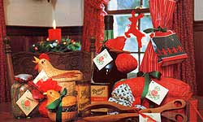
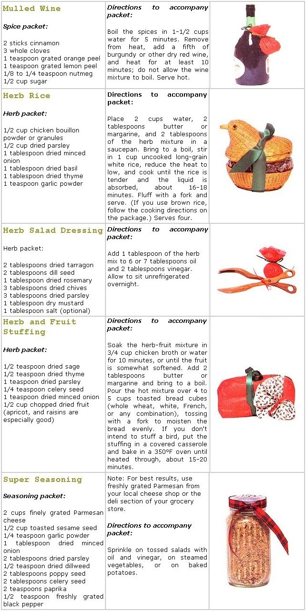

This year, give presents as warm and personal as the aroma of your own holiday kitchen.
Gifts of food at Christmas are traditional in many families, and for good reason. Since almost everyone loves to eat, the giver can rest assured that such presents will be welcomed-not stored in the attic until the next garage sale. Furthermore, preparing home-cooked gifts in a snug, fragrant kitchen is at least as much fun as coping with crowded malls and slushy streets. And best of all, a homemade gift embodies the warmth and affection that are among the loveliest ornaments of the Christmas season.
The only problem is, when a number of gifts of perishable food all arrive in the same week, there's often more than anyone can use. So why not add a measure of flexibility to this year's culinary offerings? Choose a recipe that you like . . . measure out the herbs and spices that provide its distinctive flavor . . . wrap them up with a festive ribbon . . . attach a copy of the recipe . . . and present your holiday-harried friends with a gift they can enjoy at their convenience. All they have to do is add a few of their own ingredients, follow your simple directions, and savor your (almost) home cooking.
If you have dried, homegrown herbs from last summer's garden, your gift will be even more personal and flavorful-and very economical, too. If not, you may the necessary store-bought ingredients in your pantry. (Keep in mind, though, that herbs and spices lose much of their flavor after a few months; if your tarragon has been hanging around since last Easter, get a new jar.) And even if you do have to purchase the makings for your seasoning packets, you'll still wind up with relatively inexpensive gifts-especially when you consider the prices of many of the made-for-Christmas trinkets that litter the store shelves and lure last-minute shoppers.
You may have some favorite recipes that would lend themselves to seasoning packets. But, to get you started, here are five suggestions from MOTHER's staff.
Mulled Wine is a wonderful Christmas beverage; as it heats, it fills the house with the aromas of cinnamon and cloves. You can give the spice packet alone or tie one on a gift bottle of wine. Our Herb and Fruit Stuffing mix will please any busy holiday cook, either by itself or if given in the company of a loaf of homemade bread. Herbed Rice is a fine accompaniment to chicken or leftover turkey; one packet will flavor enough rice for several meals, and you can even premix the seasonings with portions of uncooked rice for just-add-water-and-serve preparation. MOM's Super Seasoning is an all-purpose blend of herbs and Parmesan cheese for sprinkling on steamed vegetables, tossed salads, and baked potatoes (in place of fatladen butter and sour cream). And, finally, the Herb Salad Dressing mix, when added to oil and vinegar, will liven up wintertime greens.
So put on some Christmas music . . . pour yourself a cup of hot cider . . . and start mixing!
|
 |
 |
|